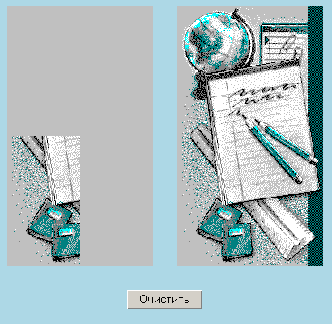

Сибирский государственный университет
телекоммуникаций и информатики
Лабораторные задания по курсу
"Введение в Интернет"
Лабораторная работа N 9
Графика & Java Script
Замена изображений на странице - использование объекта
Image() и обработчика событий onClick.
Посмотрите следующие примеры:
Автоматизируйте сборку мозаики, используя замену изображений,
для этого:
- В htm-файле создайте таблицу из двух ячеек с невидимыми границами.
- В левой ячейке создайте таблицу 2х2, где в каждой ячейке стоит рисунок
r0.gif (просто фон).
- В правой ячейке в таблице 2х2 расположите элементы мозаики
 |
 |
 |
 |
 |
r0.gif
90x160 |
r1.gif
90x160 |
r2.gif
90x160 |
r3.gif
90x160 |
r4.gif
90x160 |
- Под таблицами должна быть кнопка "Очистить".
- Сборка мозаики должна происходить так: сперва кликнуть
мышкой по выбранному элементу мозаики, а затем - куда эту
картинку поставить в таблице слева.
И картинка там должна появиться. А кнопка "Очистить" убирает слева
все поставленные элементы мозаики.
Это должно выглядеть так:

Литература:
- Обработка событий.
- Объект Image.
- JavaScript в HTML документах.